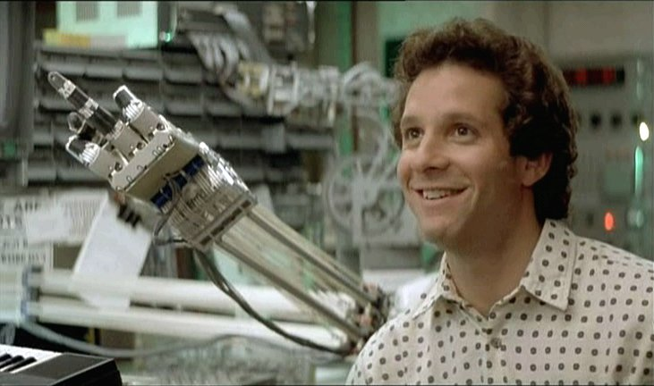

For about two years, I've had a "new website" with nothing but the word "blargh" on it and some ancient crap I wrote years ago.
More recently, I needed to assemble a portfolio (both technical and musical) for types of work that I wanted to be doing, and this seemed like a good time to explore new options for site management and deployment. I'd seen Pelican pop up more and more on various technical sites, and have always preferred the speed and simplicity of maintaining a static site over a PHP-driven blog/CMS. But I hated hand-coding HTML, and markup editors tended to be engineered for LaTeX-oriented processing.
I enjoy Markdown because it doesn't get in the way, so I can crank out docs pretty quickly using it. Since Pelican supports Markdown as an input format, it seemed like a good place to start.
The net result is that andrewboring.com is now a Pelican site, and is hosted at Github pages.
Benefits to me:
- I can extend it with Python. Easy peasy lemon squeezy!
- I can use Javascript for any interactivity, or to interface with API-based backends.
- Unlike Wordpress, I just write. I don't have to use some editor named "Gutenberg."
 This doesn't look like a Wordpress editor.
Benefits to you:
- Static content can be more secure. Fewer attack vectors for a bad actor to upload malicious content for distribution.
- Static content can be served faster than database-driven, dynamic content. There is no need for web-applications to drive stateless content.
- I can focus on NOT having to wrangle Wordpress into doing crap it was never designed to do.